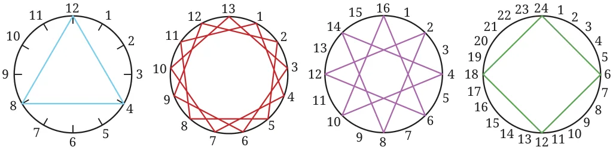

<!DOCTYPE html>
<html lang="en">
<head>
<meta charset="UTF-8">
<meta name="viewport" content="width=device-width,initial-scale=1">
<title>5.3 Co-prime numbers for safekeeping treasures — Prime Time</title>
<meta name="description" content="Class 6 Mathematics · Prime Time · 5.3 Co-prime numbers for safekeeping treasures">
<link rel="icon" href="data:image/svg+xml,<svg xmlns='http://www.w3.org/2000/svg' viewBox='0 0 100 100'><text y='.9em' font-size='90'>📘</text></svg>">
<link rel="stylesheet" href="../../../assets/book.css">
<link rel="stylesheet" href="https://cdn.jsdelivr.net/npm/katex@0.16.11/dist/katex.min.css" crossorigin="anonymous">
</head>
<body>
<header class="topbar">
<div class="topbar-in">
  <div class="crumb">
    <span class="c1"><a href="../../../index.html">Library</a> · <a href="../../index.html">Class 6 Mathematics</a></span>
    <span class="c2">Prime Time · 5.3 Co-prime numbers for safekeeping treasures</span>
  </div>
  <a class="tb-btn" data-nav="prev" href="../../05-prime-time/05-figure-it-out/index.html" title="Figure it Out">←</a>
  <details class="drawer"><summary class="tb-btn" title="Sections in this chapter">☰</summary>
<div class="drawer-panel"><div class="dh">Prime Time</div><a href="../01-common-multiples-and-common-factors-5.1/index.html">5.1 Common Multiples and Common Factors</a><a href="../02-figure-it-out/index.html">Figure it Out</a><a href="../03-figure-it-out/index.html">Figure it Out</a><a href="../04-prime-numbers-5.2/index.html">5.2 Prime Numbers</a><a href="../05-figure-it-out/index.html">Figure it Out</a><a href="../06-co-prime-numbers-for-safekeeping-treasures-5.3/index.html" aria-current="page">5.3 Co-prime numbers for safekeeping treasures</a><a href="../07-prime-factorisation-5.4/index.html">5.4 Prime Factorisation</a><a href="../08-figure-it-out/index.html">Figure it Out</a><a href="../09-figure-it-out/index.html">Figure it Out</a><a href="../10-divisibility-tests-5.5/index.html">5.5 Divisibility Tests</a><a href="../11-figure-it-out/index.html">Figure it Out</a><a href="../12-fun-with-numbers-5.6/index.html">5.6 Fun with numbers</a><a href="../13-solutions/index.html">CHAPTER 5 — SOLUTIONS</a></div></details>
  <a class="tb-btn" data-nav="next" href="../../05-prime-time/07-prime-factorisation-5.4/index.html" title="5.4 Prime Factorisation">→</a>
  <button class="tb-btn" data-theme-toggle title="Toggle light / dark" aria-label="Toggle light or dark theme">◐</button>
</div>
<div class="progress"><span style="width:43.3%"></span></div>
</header>
<main class="wrap">
<div class="sec-head">
  <p class="eyebrow"><a href="../index.html">Chapter 5 · Prime Time</a></p>
  <h1>5.3 Co-prime numbers for safekeeping treasures</h1>
  <p class="sec-meta">Textbook pages 9–11 · 3 figures</p>
</div>
<article class="prose">
<p>Which pairs are safe?</p>
<p>Let us go back to the treasure finding game. This time, treasures are kept on two numbers. Jumpy gets the treasures only if he is able to reach both the numbers with the same jump size. There is also a new rule \(- a\) jump size of 1 is not allowed. Where should Grumpy place the treasures so that Jumpy cannot reach both the treasures? Will placing the treasure on 12 and 26 work? No! If the jump size is chosen to be 2, then Jumpy will reach both 12 and 26. What about 4 and 9? Jumpy cannot reach both using any jump size other than 1. So, Grumpy knows that the pair 4 and 9 is safe. Check if these pairs are safe:</p>
<ul class="qlist">
<li><span class="mk">a.</span><span class="lt">15 and 39 b. 4 and 15</span></li>
<li><span class="mk">c.</span><span class="lt">18 and 29 d. 20 and 55</span></li>
</ul>
<p>What is special about safe pairs? They don’t have any common factor other than 1. Two numbers are said to be co-prime to each other if they have no common factor other than 1. Example: As 15 and 39 have 3 as a common factor, they are not co-prime. But 4 and 9 are co-prime. Which of the following pairs of numbers are co-prime?</p>
<ul class="qlist">
<li><span class="mk">a.</span><span class="lt">18 and 35 b. 15 and 37 c. 30 and 415</span></li>
<li><span class="mk">d.</span><span class="lt">17 and 69 e. 81 and 18</span></li>
</ul>
<p>While playing the ‘idli-vada’ game with different number pairs, Anshu observed something interesting!</p>
<figure class="fig side-fig"></figure>
<ul class="qlist">
<li><span class="mk">1.</span><span class="lt">Sometimes the first common multiple was the same</span></li>
</ul>
<p>as the product of the two numbers.</p>
<ul class="qlist">
<li><span class="mk">2.</span><span class="lt">At other times the first common multiple was less</span></li>
</ul>
<p>than the product of the two numbers. Find examples for each of the above. How is it related to the number pair being co-prime?</p>
<p>Co-prime art</p>
<p>Observe the following thread art. The first diagram has 12 pegs and the thread is tied to every fourth peg (we say that the thread-gap is 4). The second diagram has 13 pegs and the thread-gap is 3. What about the other diagrams? Observe these pictures, share and discuss your findings in class.</p>
<figure class="fig side-fig"></figure>
<figure class="fig wide"></figure>
<p>In some diagrams, the thread is tied to every peg. In some, it is not. Is it related to the two numbers (the number of pegs and the thread-gap) being co-prime?</p>
<p>Make such pictures for the following:</p>
<ul class="qlist">
<li><span class="mk">a.</span><span class="lt">15 pegs, thread-gap of 10 b. 10 pegs, thread-gap of 7</span></li>
<li><span class="mk">c.</span><span class="lt">14 pegs, thread-gap of 6 d. 8 pegs, thread-gap of 3</span></li>
</ul>
</article>
<nav class="pager"><a class="" data-nav="prev" href="../../05-prime-time/05-figure-it-out/index.html"><span class="dir">← Previous</span><span class="t">Figure it Out</span><span class="ch">Prime Time</span></a><a class="nx" data-nav="next" href="../../05-prime-time/07-prime-factorisation-5.4/index.html"><span class="dir">Next →</span><span class="t">5.4 Prime Factorisation</span><span class="ch">Prime Time</span></a></nav>
</main><footer class="site">Generated from the source textbook PDFs · text, figures and exercises belong to their respective publishers.</footer><script defer src="https://cdn.jsdelivr.net/npm/katex@0.16.11/dist/katex.min.js" crossorigin="anonymous"></script>
<script defer src="https://cdn.jsdelivr.net/npm/katex@0.16.11/dist/contrib/auto-render.min.js" crossorigin="anonymous"
  onload="renderMathInElement(document.body,{delimiters:[
    {left:'\\(',right:'\\)',display:false},
    {left:'$$',right:'$$',display:true},
    {left:'\\[',right:'\\]',display:true}],throwOnError:false,ignoredTags:['script','noscript','style','textarea','pre','code']})"></script>
<script src="../../../assets/book.js"></script>
</body>
</html>
